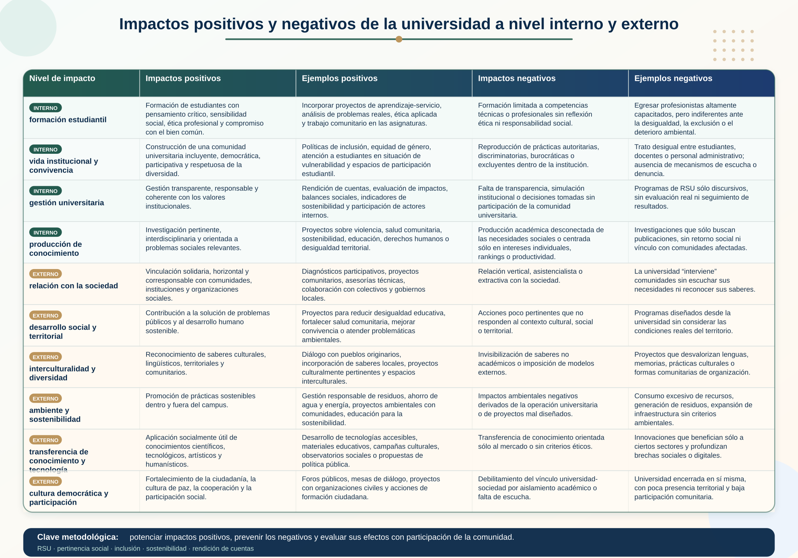

La Responsabilidad Social Universitaria (RSU) permite repensar una pregunta central para la educación superior: ¿para qué sirve el conocimiento que produce, enseña y difunde la universidad? Desde esta perspectiva, el conocimiento universitario no puede entenderse únicamente como información especializada, producción científica, innovación tecnológica o formación profesional. Su sentido más profundo aparece cuando ese conocimiento se orienta al bien común, a la comprensión crítica de la realidad y a la transformación de las condiciones sociales que generan desigualdad, exclusión, violencia, deterioro ambiental o injusticia.
Diversos autores coinciden en que la universidad contemporánea debe recuperar y fortalecer su papel social. Villar (s.f), plantea que las universidades latinoamericanas llevan años preguntándose cómo recuperar el papel que les corresponde como constructoras de conocimiento y formadoras de profesionales orientados hacia sociedades más justas, equitativas y fraternas. En ese marco surge la RSU como una forma de articular la misión universitaria con una responsabilidad ética, social y política explícita.
La utilidad social del conocimiento, por tanto, no significa reducir el saber a una utilidad inmediata, técnica o mercantil. Es decir, no se trata de producir conocimiento solo porque sirve al mercado, genera ingresos, aumenta la productividad o responde a demandas empresariales. Al contrario, la utilidad social del conocimiento se refiere a su capacidad para comprender problemas reales, ampliar derechos, mejorar la calidad de vida, fortalecer la participación social y contribuir al desarrollo humano sostenible. En el informe GUNI (Global University Network for Innovation) se plantea precisamente la necesidad de reorientar la visión y la misión de las instituciones de educación superior hacia la creación y distribución de conocimiento socialmente pertinente, capaz de aportar a una comprensión compleja de la realidad y a una transformación social positiva.
Desde esta lógica, la RSU funciona como un marco que permite evaluar si el conocimiento universitario tiene efectos socialmente valiosos pues no basta con investigar, publicar, enseñar o transferir tecnología; es necesario preguntar: ¿a quién beneficia ese conocimiento?, ¿qué problemas ayuda a resolver?, ¿qué actores participan en su construcción?, ¿qué impactos genera?, ¿qué desigualdades puede reproducir o combatir? La RSU desplaza así la idea de una universidad encerrada en sí misma y propone una universidad consciente de sus impactos internos y externos.
Villar (s.f), retoma una concepción de la RSU centrada en la gestión inteligente de los impactos educativos, medioambientales, de construcción de conocimientos, laborales y sociales. Esto es fundamental porque muestra que la universidad no solo produce impactos cuando realiza proyectos de extensión, sino también cuando diseña planes de estudio, define agendas de investigación, organiza su vida institucional, forma profesionistas o decide qué conocimientos considera valiosos.
La utilidad social del conocimiento implica, en primer lugar, pertinencia y un conocimiento es pertinente cuando responde a necesidades reales de la sociedad y no solo a intereses académicos abstractos. Esto no quiere decir que la universidad deba abandonar la investigación teórica o básica, sino que debe mantener una relación reflexiva con su contexto. La pertinencia obliga a vincular el saber con los problemas del entorno: pobreza, desigualdad educativa, violencia, salud comunitaria, deterioro ambiental, discriminación, derechos humanos, convivencia intercultural y sostenibilidad.
En ese sentido, Beltrán-Llevador, Íñigo-Bajo y Mata-Segreda (2014) afirman que la pertinencia social de la educación superior no puede entenderse solo como adaptación al mercado o a demandas externas. La universidad debe conservar su autonomía crítica y no convertirse en servidora exclusiva de la economía. Por ello, la pertinencia debe entenderse como una forma de responsabilidad y vinculación social, no como subordinación a la competitividad.
En segundo lugar, la utilidad social del conocimiento exige una relación bidireccional entre universidad y sociedad. La universidad no debe concebirse como una institución que “lleva” conocimiento a comunidades pasivas, sino como un actor que aprende, dialoga y construye saber con otros. El informe GUNI subraya que la universidad ya no puede definir por sí sola qué cuenta como conocimiento, porque el conocimiento no se produce ni circula exclusivamente dentro de ella. Su misión debe ser conectar diferentes tipos de conocimiento y forjar nuevos vínculos entre conocimiento y ciudadanía.
Esto es especialmente importante para la RSU porque permite superar una visión vertical de la extensión universitaria, entendida como la relación entre la universidad y la comunidad en la que está inmersa. La utilidad social del conocimiento no se logra cuando la universidad “asiste” a la sociedad desde una posición superior, sino cuando se vincula con comunidades, organizaciones, instituciones públicas, colectivos sociales, pueblos, territorios y grupos de interés para construir diagnósticos y soluciones compartidas. El conocimiento socialmente útil es, por tanto, co-construcido, situado y abierto al diálogo de saberes.
En tercer lugar, la utilidad social del conocimiento requiere interdisciplinariedad y transdisciplinariedad. Los problemas sociales no se explican desde una sola disciplina. La violencia, la pobreza, la exclusión educativa o la crisis ambiental combinan dimensiones económicas, políticas, culturales, tecnológicas, subjetivas, territoriales y éticas. Por eso, el informe GUNI insiste en la necesidad de superar las fronteras rígidas entre disciplinas y avanzar hacia formas de pensamiento complejo capaces de integrar saberes científicos, tecnológicos, sociales, humanísticos y comunitarios.
Desde la RSU, lo anterior significa que la universidad debe promover proyectos donde la investigación científica dialogue con la tecnología, las humanidades, las artes, los saberes territoriales y las experiencias comunitarias. Por ejemplo, un problema ambiental no se resuelve solo con datos técnicos sobre residuos; también requiere educación ciudadana, diseño de estrategias comunicativas, comprensión cultural de los hábitos de consumo, análisis normativo, participación comunitaria y reflexión ética sobre la relación entre sociedad y naturaleza.
En cuarto lugar, la utilidad social del conocimiento debe estar orientada por una dimensión ética e incluyente. La RSU pide que te preguntes por las consecuencias del conocimiento, por ejemplo, tu proyecto universitario puede producir innovación, pero también puede generar exclusión si no considera a las comunidades afectadas; o puede producir tecnología, pero también ampliar brechas si no atiende la accesibilidad; o puede producir investigación, pero también reproducir relaciones desiguales si solo extrae información de los territorios sin devolver beneficios reales.
Por eso Villar (s.f), plantea que la RSU debe orientar a las universidades hacia una misión ético-política de contribución al desarrollo humano y sustentable, la equidad, la inclusión social, los derechos humanos y la cultura de paz. También señala que la universidad debe generar políticas y estrategias congruentes con esa misión en sus procesos de docencia, investigación, extensión y gestión.
La utilidad social del conocimiento también se relaciona con la formación profesional, es decir, la universidad no solo debe formar especialistas competentes, sino personas capaces de reconocer el impacto social de sus decisiones. Cada profesionista formado desde la RSU comprende que su trabajo no es neutral: puede contribuir al bienestar colectivo o profundizar desigualdades. Por ello, el conocimiento universitario debe formar conciencia crítica, discernimiento ético, responsabilidad pública y compromiso con las necesidades del entorno.
En este sentido, la RSU convierte el aprendizaje en una experiencia socialmente situada, en ese sentido tú, como estudiante, no aprendes únicamente para aprobar asignaturas o insertarte en el mercado laboral; sino que aprendes para comprender tu realidad y participar en su transformación. Metodologías como el aprendizaje-servicio, la investigación aplicada con enfoque social, los proyectos comunitarios, los observatorios universitarios, los laboratorios de innovación social, los diagnósticos participativos y la evaluación de impactos permiten conectar la formación académica con problemas reales.
De hecho, el informe GUNI, plantea que la educación superior debe pasar de estar al servicio exclusivo del mundo económico a convertirse en motor del desarrollo humano sostenible. Esto implica priorizar el valor social del conocimiento, la pertinencia y la cooperación por encima de la competencia y la competitividad.
En síntesis, la RSU y la utilidad social del conocimiento se articulan en una misma preocupación: hacer que el saber universitario tenga sentido público. Es nuestra oportunidad para lograr que nuestra universidad sea socialmente responsable y produzca conocimiento, no para encerrarlo en las aulas, laboratorios, artículos o archivos institucionales; sino que lo produzca, comparta y aplique para contribuir a la construcción una sociedad más justa, democrática, sostenible e incluyente.
Por ello, la utilidad social del conocimiento puede comprenderse como la capacidad del saber universitario para: identificar problemas reales, construir explicaciones críticas, dialogar con distintos saberes, diseñar soluciones pertinentes, evaluar impactos y contribuir al bien común. En el marco de esta UCA, este tema te permite comprender que el conocimiento no es solo un recurso individual, sino una responsabilidad colectiva: saber más debe significar también responder mejor ante la sociedad, observa el siguiente diagrama:

- Villar, Javier. Responsabilidad Social Universitaria: nuevos paradigmas para una educación liberadora y humanizadora de las personas y las sociedades,
- REDIVU – Red Latinoamericana de Compromiso Social y Voluntariado Universitario – Biblioteca Virtual.
- Beltrán-Llevador José, Íñigo-Bajo, Enrique y Mata-Segreda Alejandrina (2014). En La responsabilidad social universitaria, el reto de su construcción permanente. Revista
- Iberoamericana de Educación Superior, N. 14, V., 3-18.
- Herrera, Alma (2009). La RSU, en La Educación Superior en tiempos de Cambio, Nuevas dinámicas para la responsabilidad social.
- Madrid-Barcelona-México: Ediciones Mundi-Prensa, 40-41.
Te recomendamos ver este video para profundizar sobre este tema:
Impactos positivos y negativos de la universidad a nivel interno y externo.
Ahora bien, en el marco de la RSU, la universidad no debe evaluarse únicamente por la cantidad de estudiantes que forma, los títulos que otorga o las investigaciones que produce, sino también por los impactos que genera en su propia comunidad y en la sociedad. Desde esta perspectiva, toda acción universitaria tiene consecuencias: puede contribuir al bien común, a la equidad y el desarrollo humano sostenible, pero también puede reproducir desigualdades, exclusiones o formas de conocimiento poco pertinentes. Villar (s.f), señala que la responsabilidad social busca juzgar las acciones por sus consecuencias positivas y negativas, porque lo que hace una institución afecta a las personas y su entorno para bien o para mal.
A nivel interno, los impactos de la universidad se producen dentro de su propia vida institucional y son positivos cuando la universidad forma estudiantes con conciencia ética, pensamiento crítico, responsabilidad social y sensibilidad ante los problemas colectivos. También cuando promueve relaciones laborales justas, inclusión, equidad de género, respeto a la diversidad, participación estudiantil, transparencia en la gestión y una cultura institucional coherente con los valores que enseña. En este sentido, la RSU exige que la universidad sea congruente entre su misión, sus procesos de docencia, investigación, extensión y gestión.
Sin embargo, también pueden existir impactos internos negativos. Por ejemplo, dentro de la universidad se pueden reproducir prácticas autoritarias, burocráticas o excluyentes; puede formar profesionales técnicamente competentes pero sin compromiso ético; puede mantener brechas de acceso, discriminación, desigualdad entre estudiantes o condiciones laborales precarias. También puede impulsar una cultura académica centrada solo en la competencia, la productividad o la obtención de credenciales, dejando de lado la formación integral y el sentido social del conocimiento.
A nivel externo, los impactos se relacionan con la manera en que la universidad actúa sobre su entorno social, comunitario, cultural, económico y ambiental. Sus impactos son positivos cuando produce conocimiento socialmente pertinente, contribuye a resolver problemas reales, fortalece la participación ciudadana, promueve proyectos de desarrollo sostenible, acompaña procesos comunitarios, difunde saberes útiles y colabora con actores sociales diversos. Los documentos de GUNI insisten en que la educación superior debe reorientar su misión hacia la creación y distribución de conocimiento socialmente pertinente, capaz de contribuir a una transformación social positiva.
Pero los impactos externos también pueden ser negativos. Esto ocurre cuando la universidad se vincula con la sociedad de manera vertical, asistencialista o extractiva; cuando investiga comunidades sin devolver beneficios; cuando responde solo a intereses del mercado; cuando produce tecnologías o conocimientos que profundizan desigualdades; o cuando ignora los efectos ambientales y sociales de sus proyectos. También puede tener impactos negativos si sus investigaciones, prácticas profesionales o programas de vinculación no consideran las necesidades reales de las personas afectadas.
Por ello, la RSU propone que la universidad desarrolle una cultura permanente de observación, escucha, diagnóstico, evaluación, rendición de cuentas y medición de impactos. No basta con afirmar que la universidad contribuye a la sociedad; es necesario analizar de qué manera lo hace, a quién beneficia y qué consecuencias produce. Villar menciona herramientas como la medición de impactos, indicadores, autoevaluación, coevaluación, observatorios, balances sociales y balances de sostenibilidad como medios para hacer operativa esta responsabilidad.
En síntesis, los impactos positivos y negativos de la universidad deben analizarse en dos direcciones: hacia adentro, en su vida institucional, y hacia afuera, en su relación con la sociedad. Una universidad socialmente responsable es aquella que reconoce sus efectos, corrige sus prácticas negativas y orienta sus capacidades formativas, científicas, tecnológicas, artísticas y humanísticas hacia el bienestar colectivo, la justicia social, la inclusión y la sostenibilidad.
Desde la perspectiva de la RSU, construir saber para beneficio de la sociedad supone reconocer que la universidad tiene impactos internos y externos. Internamente, forma estudiantes, organiza prácticas docentes, establece relaciones laborales, define valores institucionales y produce formas de convivencia. Externamente, incide en comunidades, territorios, políticas públicas, debates sociales, proyectos de investigación y procesos culturales. Por ello, el saber universitario debe construirse con responsabilidad, considerando sus consecuencias éticas, sociales, políticas y ambientales. En la siguiente tabla podrás encontrar ejemplos de los impactos positivos y negativos en el nivel interno y externo de la universidad:

- Villar, Javier. Responsabilidad Social Universitaria: nuevos paradigmas para una educación liberadora y humanizadora de las personas y las sociedades,
- REDIVU – Red Latinoamericana de Compromiso Social y Voluntariado Universitario – Biblioteca Virtual.
Te recomendamos ver estos videos para profundizar sobre este tema: